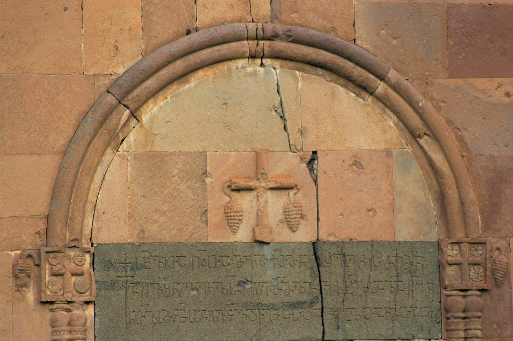

წუნდის იჩქით გურგენისძის წარწერაInscription of Ichkit Gurgenisdze from Tsunda
წუნდის იჩქით გურგენისძის წარწერა
Inscription of Ichkit Gurgenisdze from Tsunda
შინაარსი / Summary
საამშენებლო Building
ბიბლიოგრაფია Bibliography
კრიტიკული გამოცემა Interpretive Edition
„† სხლთა ღჲთა მე იჩქთმნ გრგნის ძემნ აღვშნე ეკლსჲ ესე მმლი ჩნი სხლსა ზა წისა ნთლისმცმსსა სლცვდ ჩემთს და მშბლთა ჩმთათს
† ს(ა)ხ(ე)ლ(ი)თა ღ(მრთისა)ჲთა მე იჩქ(ი)თმ(ა)ნგ(უ)რგ(ე)ნისძემ(ა)ნ
აღვ(ა)შ(ე)ნე ეკლ(ე)ს(ია)ჲ ესე მ(ა)მ(უ)ლი ჩ(უე)ნი ს(ა)ხ(ე)ლსა ზ(ედ)ა წ(მიდ)ისა
ნ(ა)თლისმც(ე)მ(ლი)ს(ა)სა ს(ა)ლ(ო)ცვ(ელა)დ ჩემთ(ჳ)ს და მშ(ო)ბ(ე)ლთა ჩ(ე)მთათ(ჳ)ს
დიპლომატიური გამოცემა Diplomatic Edition
„† ႱႾႪႧႠ ႶჂႧႠ ႫႤ ႨႹႵႧႫႬ ႢႰႢႬႨႱ ႻႤႫႬ ႠႶႥႸႬႤ ႤႩႪႱჂ ႤႱႤ ႫႫႪႨ ႹႬႨ ႱႾႪႱႠ ႦႠ ႼႨႱႠ ႬႧႪႨႱႫႺႫႱႱႠ ႱႪႺႥႣ ႹႤႫႧႱ ႣႠ ႫႸႡႪႧႠ ႹႫႧႠႧႱ
† ႱႾႪႧႠ ႶჂႧႠ ႫႤ ႨႹႵႧႫႬႢႰႢႬႨႱႻႤႫႬ
ႠႶႥႸႬႤ ႤႩႪႱჂ ႤႱႤ ႫႫႪႨ ႹႬႨ ႱႾႪႱႠ ႦႠ ႼႨႱႠ
ႬႧႪႨႱႫႺႫႱႱႠ ႱႪႺႥႣ ႹႤႫႧႱ ႣႠ ႫႸႡႪႧႠ ႹႫႧႠႧႱ

წუნდის იჩქით გურგენისძის წარწერა
{'default': 'ღმრთის სახელით მე, იჩქითმა, გურგენის ძემ, ავაშენე ეს ეკლესია, ჩუენი მამული,\n წმიდა ნათლისმცემლის სახელზე, სალოცველად ჩემთვის და ჩემი მშობლებისთვის. In the name of God, I Ichkit son of Gurgen built this church, our land, with the name of John the Baptist, for prayers for me and my parents.'}
{'default': 'ვალერი სილოგავას აზრით, წარწერის ტექსტში იჩქით გურგენისძე ერთგვარი ხაზგასმით აღნიშნავს, „აღვაშენე ეკლესიაჲ ესე, მამული ჩუენიო“. როგორც ჩანს,\n წუნდა და მისი მიდამოები, ვრცელი ადგილი ვანის ქვაბების ტერიტორიის ჩათვლით, ძველი დროიდანვე, ჯერ კიდევ თამარის მეფობამდე და შეიძლება თვით XII საუკუნემდე,\n გურგენისძეთა სამამულო სამფლობელო ყოფილა. XII საუკუნის ბოლოს ვარძიის გრანდიოზული სამონასტრო კომპლექსის მშენებლობის შემდეგ, როდესაც იგი და, ალბათ,\n მის გარშემო მიდამოები სამეფო სამფლობელოდ გადაიქცა, გურგენისძეთა სამფლობელოსაც სამეფო სამფლობელოდ გადაქცევის საფრთხე დაემუქრა და იჩქითი ორ სხვადასხვა\n წარწერაში (ერთი წუნდაში, მეორე ვანის ქვაბებში) საგანგებოდ აღნიშნავს, რომ ეს ადგილები გურგენისძეთა სამკვიდრებელია, ისინი მისი მამულია.\n 1204 წლიდან, როგორც ვანის ქვაბების ანტონ ჭყონდიდელის ზღუდის აშენების წარწერიდან ჩანს, აქ უკვე სამშენებლო სამუშაოებს მეფის მოხელე ჭყონდიდელ-\n მწიგნობართუხუცესი აწარმოებს, რაც იჩქითის მამულის სამეფო მფლობელობაში გადასვლის ნიშანი და საბუთია. ვალერი სილოგავა აქედან იმასაც ასკვნის, რომ\n იჩქით გურგენისძის წარწერის ზედა ქრონოლოგიური ზღვარი 1204 წელია. ხოლო ქვედა ზღვარი, ალბათ, თამარის მეფობის დასაწყისი (1184).\n მკვლევარი ყურადღებას აქცევს ერთ გარემოებასაც, იჩქით გურგენისძე არ ახსენებს არც მემკვიდრეებს, არც სანათესაოს. თუმცა წარწერის ბოლოს იგი წერს:\n „სალოცველად ჩემთჳს და მშობელთა ჩემთათჳს“, რაც იმას ნიშნავს, რომ წუნდის წარწერის შესრულების დროისათვის იჩქითის მშობლები ცოცხლები არიან.\n როგორც ჩანს, იგი უმემკვიდროდ გადაეგო და ასეთ შემთხვევაში, არსებული წესის თანახმად, უმემკვიდრეო სამფლობელო ისედაც მეფის საკუთრებაში გადადიოდა.'}
<div type="edition" xml:lang="ka" ana="mtavruli" xml:space="preserve">
<ab>
<lb n="1"/><w lemma="ქრისტე"><expan><abbr>ქ</abbr><ex>რისტ</ex><abbr>ე</abbr></expan></w>
<w lemma="განსუენება"><expan><abbr>გა</abbr><ex>ნ</ex><abbr>ო</abbr><ex>ჳ</ex><abbr>ს</abbr><ex>უ</ex><abbr>ენე</abbr></expan></w>
<w lemma="სულ">სოჳ<lb n="2" break="no"/>ლსა</w>
<name nymRef="ვაჩა">ვაჩაჲს<lb n="3" break="no"/>ასა</name>
<name nymRef="გურა"><expan><abbr>გო</abbr><ex>ჳ</ex><abbr>რაჲ<lb n="4" break="no"/>სასა</abbr></expan></name>
<name nymRef="მირა"><expan><abbr>მ</abbr><ex>ი</ex><abbr>რა</abbr><ex>ჲ</ex><abbr>ს</abbr><ex>ა</ex><abbr>ს</abbr><ex>ა</ex></expan></name>
</ab>
</div>